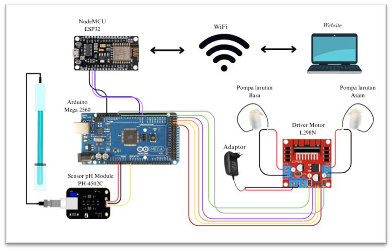
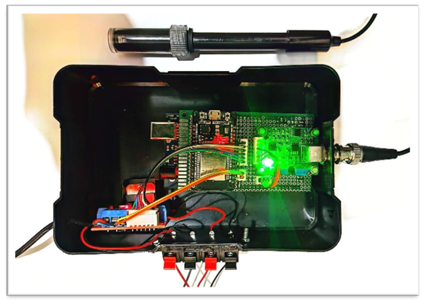
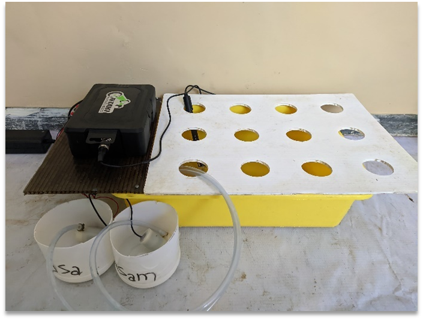
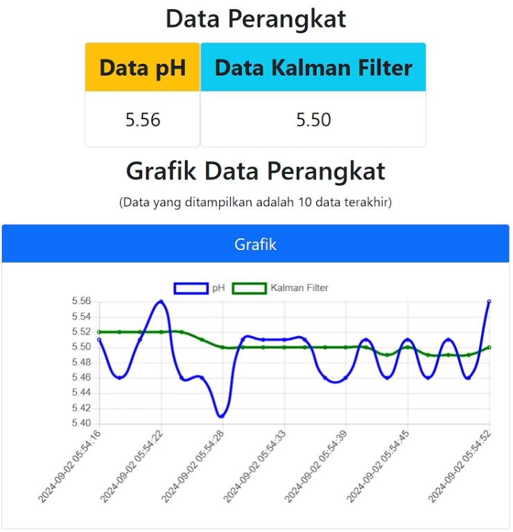
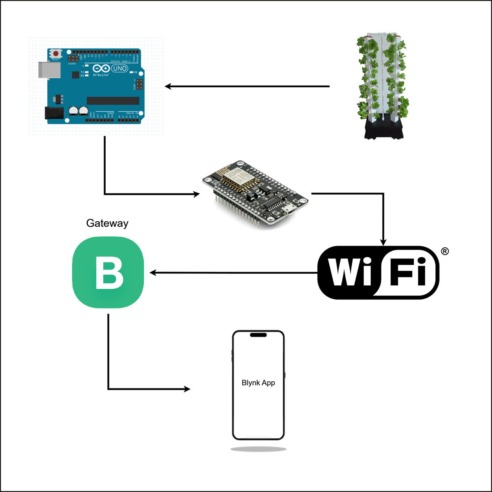
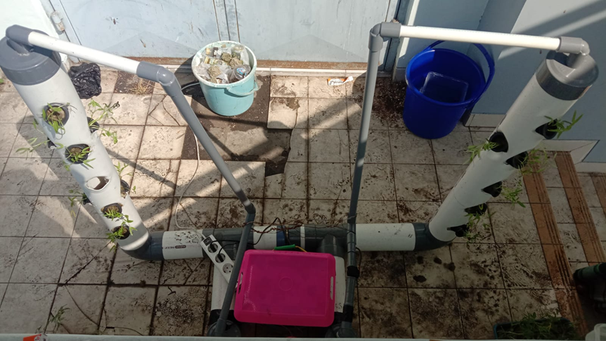
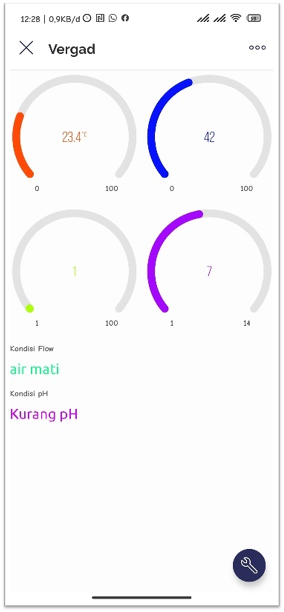
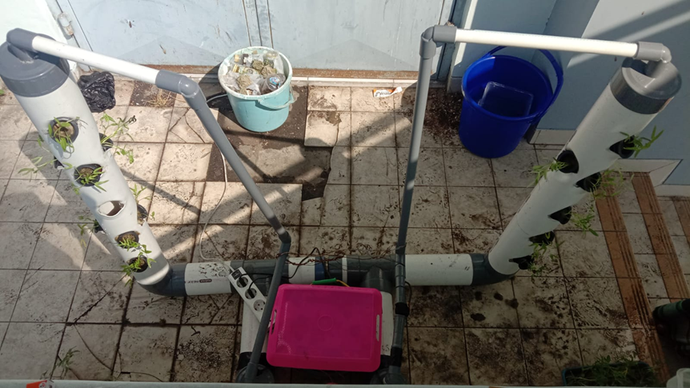
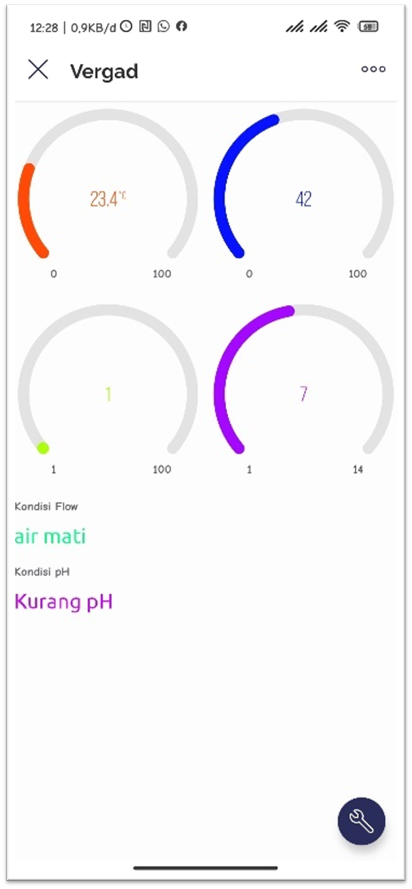

Achmad Nur Aqmali
Informatics Engineering Graduate | Front-End Developer | IoT Enthusiast
About Me
I am a passionate Informatics Engineering graduate focusing on front-end development and IoT. With experience in developing smart agriculture IoT systems and optimizing UI/UX, I strive to create efficient and user-friendly solutions.
Contact
Email: achmadnuraqmali@gmail.com
Phone: 085708676138
Projects
Smart Hydroponics System
Implemented Kalman Filter to stabilize pH sensor data.
    View on GitHubIoT-Based Vertical Garden
Analyzed plant growth differences between IoT-based & conventional methods.
 

View on GitHub


View on GitHub
Work Experience
PT Atosim Lampung Pelayaran
Position: Staff - Ticket Agent
Years: 2019 - Present
Responsible for managing ticket sales, customer service, and operational support to ensure smooth passenger boarding and scheduling.
Certifications
HTML & CSS Training
Digital Talent Scholarship (2022)
Java Script Training
Digital Talent Scholarship (2022)
Awards
Riset Kompetitif Mahasiswa (RKM)
Research Title: Analysis of Growth and Development of Hydroponic Plants in an IoT-Based Vertical Garden Using the RAL Method
Role: IoT System Designer & Implementer
🏆 Selected through a multi-stage competition (Department → Faculty → University Level).
🔧 Designed, developed, and implemented an IoT system for real-time pH & temperature monitoring in hydroponics.
📊 Analyzed plant growth differences between IoT-based & conventional methods.
🌱 Results: Improved farming efficiency through data-driven insights.